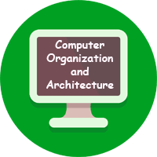

Computer Organisation

Unit 1
Digital Components and Data Representation
Watch video
Unit 2
Combinational Circuits and Sequential Switching Circuits
Watch video
Unit 3
Computer Arithmetic and Basic Computer Organisation and Design
Watch video
Unit 4
Central Processing Unit and Microprogrammed Control
Watch video
Unit 5
Memory Organisation
Watch video